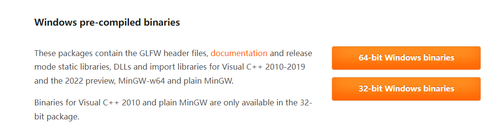
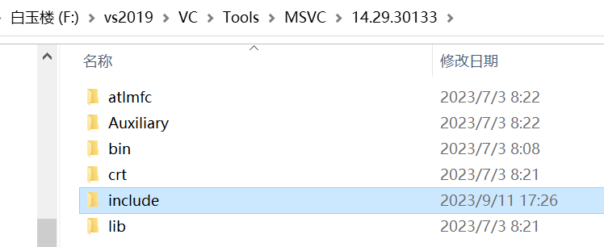
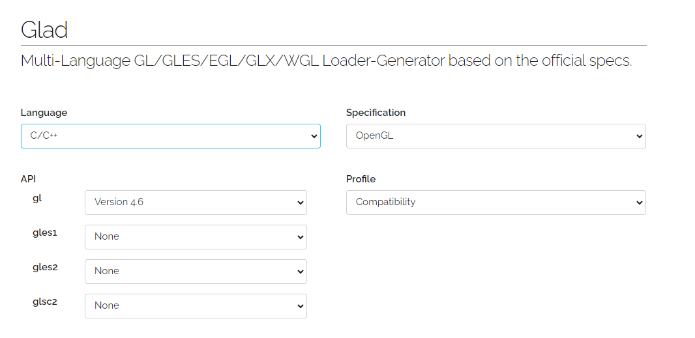
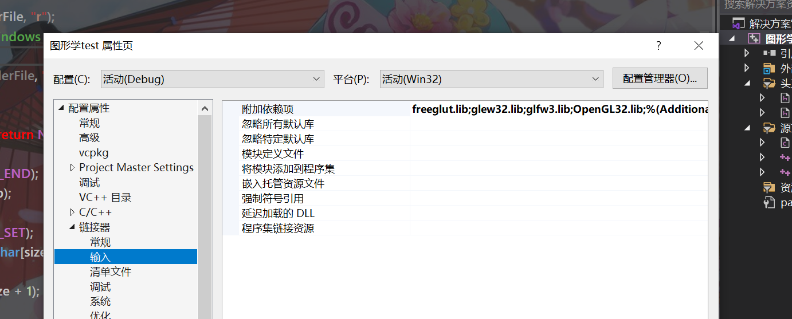

OpenGL环境手动安装配置记录
由于一键安装时vcpkg的傻逼报错修了一晚上修不好于是综合了好几个安装教程博客手动添加库才成功跑起来
1、安装VS2019
这个直接略过
2、安装cmake
在上述网址下载对应平台安装包即可，注意在安装时关于修改系统环境变量的选项中选择添加到所有用户的PATH
3、安装Git
这个装过了，安装直接搜索网络教程就行。
4、安装OpenGL库与在VS2019的配置
GLFW
https://www.glfw.org/download.html
windows端选择pre-compiled binaries，这是已经预编译的文件，可以直接使用

将下载好的文件解压，将对应文件拷贝到vs2019安装目录中的文件夹中，本机的安装目录如下，根据自己的安装情况找到对应文件夹
头文件：在下载好的GLFW文件夹中，将头文件拷贝到vs目录中的include目录中的GL文件夹，若没有则先创建一个GL文件夹，这个文件夹用于专门存储OpenGL库的头文件。
bin文件：将对应dll文件拷贝到vs目录下的bin文件夹中，拷贝到最小目录，注意将x86文件拷贝到x86目录下，x64文件拷贝到x64目录下。
.lib文件：与bin同理，拷贝到lib目录下的文件夹中，注意x86和x64都要拷贝。
GLEW
下载最新版本即可，相关配置同上
FreeGLUT
https://www.transmissionzero.co.uk/software/freeglut-devel/
glad
API gl version直接选4.6即可，将include部分直接拷贝到vs头文件GL目录下

glm
https://github.com/g-truc/glm/releases/tag/0.9.8.0
解压后把子文件夹中的glm文件夹直接整个拷贝到vs目录中的include中，导入头文件的方式为：
1 |
vs中配置
在目标目录新建一个项目
进入vs2019，点击项目，管理NuGet程序包，搜索nupengl，安装两个相关的组件
链接配置：运行前，将几个dll文件拷贝到系统文件夹（C:\Windows\SysWOW64 C:\Windows\System32）
右键项目，点进属性->连接器->输入->附加依赖项

将 freeglut.lib;glew32.lib;glfw3.lib;OpenGL32.lib;复制到附加依赖项中。
-
Debug时可以正常运行但Release模式无法正常执行？
在项目设置中配置为Release的菜单中再导入一次上面的依赖项即可
注意一定要执行上面的操作，否则会报无法解析外部符号的错误
保存设置，基本配置就差不多了，使用的时候只需导入对应头文件即可。
注意：
-
导入glad的时候只导入头文件运行的话会出现未识别的外部符号问题，因此要将glad.c文件导入到项目中。
-
若出现 #error : OpenGL header already included,remove this include, glad already provides it报错，将glad头文件的导入放在其他所有OpenGL库导入的前面即可解决。